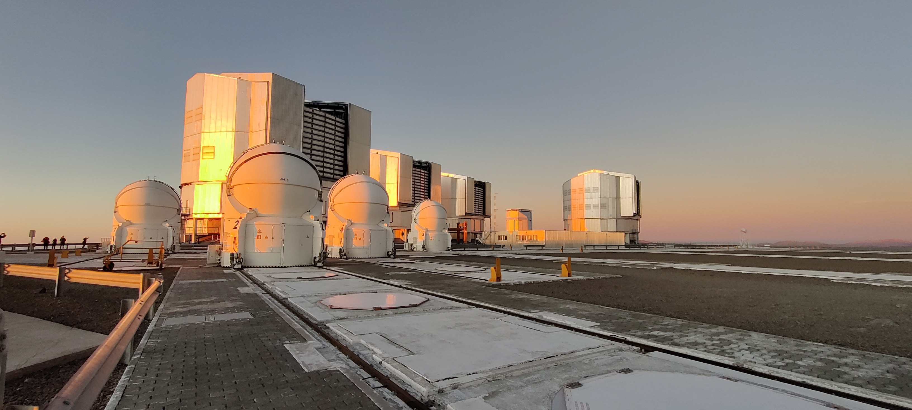
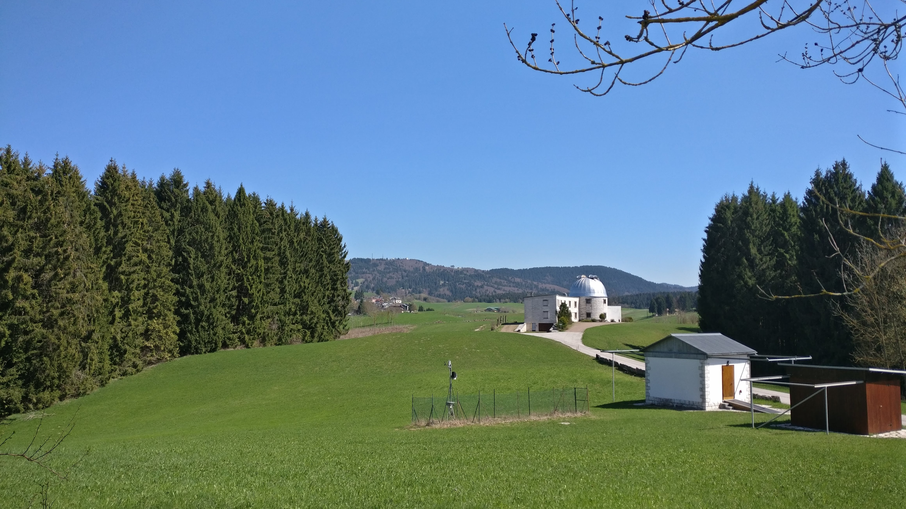

About Me

Education:
Bachelor degree in Astronomy, University of Padova, 2013
Master Degree in Astronomy, University of Padova, 2015
Ph.D. in Astronomy, Universtity of Padova, 2019
Research Interests: I started my career in Astronomy studying active galactic nuclei (AGN) and the impact they have on their host galaxy.
In particular, I focused on the study of their most extended structures both in the optical (the extended narrow-line region) and in the radio band.
Towards the end of my Ph.D., my interest shifted more towards normal star-forming galaxies, the impact of star formation on their structure and evolution
and the properties of the ionized gas. Right now, I am principally interested in identifying, classifying and characterizing ionized nebulae in nearby star-forming
galaxies observed by MUSE.
Research
Collaborations:
PHANGS
As a member of the PHANGS collaboration, my interest focuses on the identification, classification andf characterization of ionized nebulae in the PHANGS-MUSE sample.
In particular, I am focusing in developing new automatic ways to classify nebulae taking advantage of the wealth of information that can be recovered from the MUSE datacubes.
I recently published a first work on this topic, that focuses on using a model-comparison-based algorithm to classifify the most common classes of nebulae (link).
I am also a member of the PHANGS-MUSE team, and I contribute to the reduction and analysis of the MUSE data acquired by the collaboration.
SDSS-V
I am a member of the Local Volume Mapper (LVM) science team. I joined the collaboration during my postdoc at Universidad de Chile.
I am interested in the new view that LVM will give us on the Milky Way, which will allow to finally connect Galactic to extragalactic physics.
As part of the team, I developed, in collaboration with Oleg Egorov, the LVM data simulator, a software that allows to simulate raw and reduced
LVM data and that can be used as a tool to plan observations but also for forward modeling studies, since it allows to compare detailed simulations
of nebulae or other objects with the actual results of LVM observations
Publications: Link to ADS
First author papers:
2023 —
PHANGS-MUSE: Detection and Bayesian classification of ~40000 ionised nebulae in nearby spiral galaxies
2020 —
The radio structure of the narrow-line Seyfert 1 Mrk 783 with VLBA and e-MERLIN
2017 —
Kiloparsec-scale emission in the narrow-line Seyfert 1 galaxy Mrk 783
2017 —
High-resolution spectroscopy of the extended narrow-line region of IC 5063 and NGC 7212
Observatory

As part of my duties as an ESO fellow, I spend half of my time working at the Paranal observatory.
I regularly support operations at UT4, one of the main telescopes of the observatory, and I am part
of the team supporting and monitoring the MUSE integral field spectrograph.
Next shifts:
—
June 27 — July 4, 2023
—
September 1 — 13, 2023
Contact

Email: econgiu@eso.org
Address: Dr. Enrico Congiu, ESO Chile Science Office Vitacura-SCV,
Av Alonso de Cordova 3107,
ZIP 7630355, Santiago, Chile